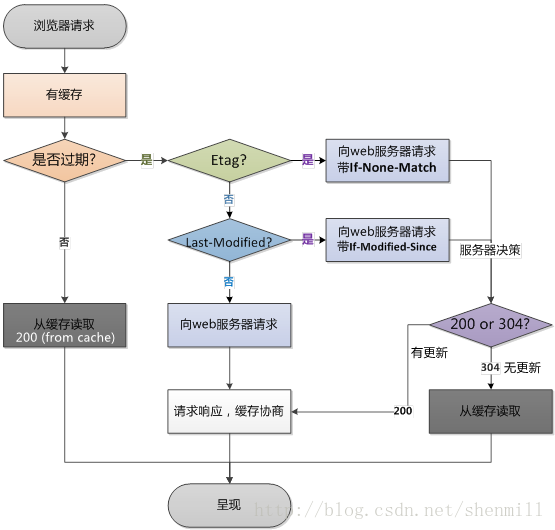

<!DOCTYPE html>
<html>
  <head><meta name="generator" content="Hexo 3.8.0">
    <meta charset="utf-8">
    
    <title>Wedcache | HengGe</title>
    <meta name="viewport" content="width=device-width, initial-scale=1, maximum-scale=1">
    
    
      <link rel="icon" href="/favicon.png">
    

    <link rel="stylesheet" href="/css/style.css">

    <link rel="stylesheet" href="/js/google-code-prettify/tomorrow-night-eighties.min.css">

  </head>

  <body>
</body></html>
<header>
	<a id="logo" href="/" title="HengGe">
	</a>
	
	
		<!--搜索栏-->
		<i class="js-toggle-search iconfont icon-search"></i>


<form class="js-search search-form search-form--modal" method="get" action="http://gushi.li" role="search">
	<div class="search-form__inner">
		<div>
			<i class="iconfont icon-search"></i>
			<input class="text-input" placeholder="Enter Key..." type="search">
		</div>
	</div>
</form>
	

	
		<!--侧边导航栏-->
		<a id="nav-toggle" href="#"><span></span></a>

<nav>
	<div class="menu-top-container">
		<ul id="menu-top" class="menu">
			
				
				<li class="current-menu-item">
					<a href="https://hengge1226.github.io/2019/04/17/MVC&amp;MVVM/" target="_self">MVC &amp; MVVM</a>
				</li>
			
				
				<li class="current-menu-item">
					<a href="/2019/05/07/Wedcache/" target="_self">前端缓存浅谈</a>
				</li>
			
				
				<li class="current-menu-item">
					<a href="/2019/05/11/Cookie &amp; Session &amp; Token/" target="_self">Cookie &amp; Session &amp; Token</a>
				</li>
			
		</ul>
	</div>
</nav>
	

</header>
<div class="m-header ">
	<section id="hero1" class="hero">
		<div class="inner">
		</div>
	</section>
	
		<figure class="top-image" data-enable="true"></figure>
	
</div>

<!--文章列表-->
<div class="wrapper">
  
    <!--文章-->
<article>
	
  
    <h1 class="post-title" itemprop="name">
      Wedcache
    </h1>
  

	<div class="post-body mb">
		<h2 id="浅谈前端缓存机制"><a href="#浅谈前端缓存机制" class="headerlink" title="浅谈前端缓存机制"></a>浅谈前端缓存机制</h2><p><strong>在做前端优化，特别是提升网页加载速度的时候，缓存无疑是一个很有效的方法。<br>但是涉及到缓存的知识多而杂，为了更好的自我总结，查阅了网上很多的资料，在此写下一些对前端缓存机制的理解</strong></p>
<hr>
<h3 id="所以我们日常前端开发中涉及到的缓存有哪几种？"><a href="#所以我们日常前端开发中涉及到的缓存有哪几种？" class="headerlink" title="所以我们日常前端开发中涉及到的缓存有哪几种？"></a>所以我们日常前端开发中涉及到的缓存有哪几种？</h3><h4 id="一-CDN缓存"><a href="#一-CDN缓存" class="headerlink" title="一. CDN缓存"></a>一. CDN缓存</h4><p><strong><em>CDN是什么东西？</em></strong></p>
<p>CDN（Content Delivery network，内容分发网络），用户在进行CDN进行数据请求的时候，CDN会自动的选择一个距离用户最近的节点来做出响应。有了CDN之后，客户端在与服务端的交互过程中间加入了CDN这个角色，他作为一个边缘节点可以帮助源点服务端预先对用户的请求进行处理，分析缓存是否过期，再选择是否向源站发起请求，请求数据。</p>
<p><strong><em>优势在于？</em></strong></p>
<ul>
<li>CDN节点解决了跨地域和跨运营商的问题，大大降低了数据传输的延时性。</li>
<li>因为大部分的请求都在边缘的节点完成，起到了分流的作用，所以大大减轻了源站的压力。</li>
</ul>
<hr>
<p><br></p>
<h4 id="二-DNS缓存"><a href="#二-DNS缓存" class="headerlink" title="二. DNS缓存"></a>二. DNS缓存</h4><p><strong><em>DNS是个什么东西？</em></strong></p>
<p>首先DNS是指将域名URL转化为服务器的主机IP，在DNS查询解析的过程中，浏览器什么都做不了，保持空白的页面，所以提升DNS的查询速度也是前端的优化之一。</p>
<p>而<strong>DNS缓存</strong>就是优化方式之一，对DNS进行缓存可以减少重复的查找，提升网页的打开速度，但是缓存时间过长，也会容易造成访问的正确率下降，没办法及时检测到服务器的IP变化。</p>
<p><em>（当然对DNS进行优化并不止缓存这一种方式，DNS预解析也是一种很好的方式，当你浏览网页时，浏览器会在加载网页时对网页中的域名进行解析缓存，这样在你单击当前网页中的连接时就无需进行DNS的解析，减少用户等待时间，提高用户体验。）</em><br><br></p>
<hr>
<p><br></p>
<h4 id="三-客户端缓存（强缓存和协商缓存）"><a href="#三-客户端缓存（强缓存和协商缓存）" class="headerlink" title="三. 客户端缓存（强缓存和协商缓存）"></a>三. 客户端缓存（强缓存和协商缓存）</h4><p><strong><em>客户端缓存是个什么东西？</em></strong></p>
<p>客户端缓存是 缓存的最后一层，是直接面对客户端的客户端缓存。通常也把这部分称为web缓存。web缓存位于客户端。缓存会根据进来的请求保存输出内容的复本，例如html页面、图片文件等，然后，当下一个请求来到时，如果是相同的URL，缓存直接使用复本相应请求访问，而不是向源服务器再次发送请求。</p>
<p><strong><em>缓存策略如下</em></strong></p>
<ol>
<li><p>浏览器发起资源请求</p>
</li>
<li><p>首先通过请求头信息判断是否击中强缓存</p>
</li>
<li><p>判断方式{标识为Expires(HTTP/1.0)或Cache-Control(HTTP/1.1),如果Expires和Cache-Control同时使用的话，后者的优先级较高}</p>
<p>​    a、不存在该缓存结果和缓存标识，强制缓存失效，则直接向服务器发起请求（跟第一次发起请求一致）。</p>
<p>​    b、存在该缓存结果和缓存标识，但该结果已失效，强制缓存失败，则使用协商缓存。</p>
<p>​    c、存在该缓存结果和缓存标识，且该结果尚未失效，强制缓存生效，直接返回该结果。(没有向服务器发起请求，浏览器直接返回200，并直接从本地缓存中读取资源)</p>
</li>
<li><p>当缓存标识存在且过期的时候，便需要使用协商缓存，如果存在Etag，则校验If-None-Match，<br>如果存在Last-Modified,则校验，If-Modified-Since，<br>​如果一致，服务器返回304，浏览器直接从缓存中读取资源，若未命中缓存，服务器返回资源，并对Etag和Last-Modified进行更新。<br></p>
</li>
</ol>
<hr>
<p><br><br><br><br><strong>Q1:为什么last-modified还要有etags？*</strong></p>
<p>1、last-modified的时间只能精确到秒，如果资源修改得比较频繁，频率在秒以下时，就出现了偏差。</p>
<p>2、当存在周期性重写某些资源，但资源实际内容并未发生改变，或修改的内容并不重要如注释等，就应当使用Etag。</p>
<p><strong><em>Q2:Etag的缺点？</em></strong></p>
<p>ETag本身需要消耗 CPU，而它的优先级比 Last-Modified 高，当它存在时服务器无论 Last-Modified 是否存在都会使用它判断，ETag在分布式系统中生成的值可能不一样，会导致缓存失效</p>
<p><strong><em>Q3:强缓存和协商缓存的区别？</em></strong></p>
<p><strong>强缓存</strong>：客户端第一次问服务器要某个资源时，服务器丢还给客户端所请求的这个资源同时， 告      诉客户端将这个资源保存在本地，并且在未来的某个时点之前如果还需要这个资源，直接从本地获      取就行了， 不用向服务器请求。这种方式缓存下来的资源称为强缓存。</p>
<p><strong>协商缓存</strong>：客户端第一次问服务器要某个资源时，服务器丢还给客户端所请求的这个资源同时，将该资源的一些信息也返回给客户端，告诉客户端将这个资源缓存在本地。当客户端下一次需要这个资源时，将请求以及相关信息一并发送给服务器，由服务器来判断客户端缓存的资源是否需要更新：如不需要更新，就直接告诉客户端获取本地缓存资源（304）； 如需要更新，则将最新的资源连同相应的信息一并返回给客户端。</p>
<p><br><br><strong>参考文章：</strong></p>
<ul>
<li><a href="https://blog.csdn.net/shenmill/article/details/71080926" target="_blank" rel="noopener">https://blog.csdn.net/shenmill/article/details/71080926</a></li>
<li><em><a href="https://www.jianshu.com/p/5391052d5382" target="_blank" rel="noopener">https://www.jianshu.com/p/5391052d5382</a></em> </li>
</ul>

	</div>
	<div class="meta split">
		
		<time class="post-date" datetime="2019-05-07T09:13:29.000Z" itemprop="datePublished">2019-05-07</time>
	</div>
</article>

<!--评论-->

	
<div class="ds-thread" data-thread-key="Wedcache" data-title="Wedcache" data-url="https://hengge1226.github.io/2019/05/07/Wedcache/"></div>
<script type="text/javascript">

var duoshuoQuery = {short_name:"yumemor"};
	(function() {
		var ds = document.createElement('script');
		ds.type = 'text/javascript';ds.async = true;
		ds.src = (document.location.protocol == 'https:' ? 'https:' : 'http:') + '//static.duoshuo.com/embed.js';
		ds.charset = 'UTF-8';
		(document.getElementsByTagName('head')[0]
		 || document.getElementsByTagName('body')[0]).appendChild(ds);
	})();
</script>


  
</div>


  <svg id="bigTriangleColor" width="100%" height="40" viewbox="0 0 100 102" preserveaspectratio="none">
    <path d="M0 0 L50 100 L100 0 Z"/>
  </svg>

  


  <div class="wrapper"></div>


<div class="fat-footer">
	<div class="wrapper">
		<div class="layout layout--center">
			<div class="layout__item palm-mb">
				<div class="media">
					
					<div class="media__body">
						<h4>Ye.Guangheng</h4>
						<p class="site-description">Just Share My Life</p>
					</div>
				</div>
				<div class="author-contact">
					<ul>
						
							
							<li>
				        		<a href="http://weibo.com/" target="_blank">
				        			
				        				<i class="iconfont icon-weibo"></i>
				        			
				        		</a>
				        	</li>
						
							
							<li>
				        		<a href="https://github.com/HENGGE1226" target="_blank">
				        			
				        				<i class="iconfont icon-github"></i>
				        			
				        		</a>
				        	</li>
						
					</ul>
				</div>
			</div>
		</div>
	</div>
</div>

<footer class="footer" role="contentinfo">
	<div class="wrapper wrapper--wide split split--responsive">
		
		<span>Theme by <a href="http://github.com/justpsvm">justpsvm</a>. Powered by <a href="http://hexo.io">Hexo</a></span>
	</div>
</footer>

	<!-－这里导入了 lib.js 里面涵盖了 jQuery 等框架 所以注释掉-->
	<!--<script src="http://lib.sinaapp.com/js/jquery/2.0/jquery.min.js"></script>-->
	<script src="/js/lib.js"></script>
	<script src="/js/google-code-prettify/prettify.js"></script>
	<script src="/js/module.js"></script>
	<script src="/js/script.js"></script>
	
	<script type="text/javascript">
		//代码高亮
		$(document).ready(function(){
	 		$('pre').addClass('prettyprint linenums').attr('style', 'overflow:auto;');
   			prettyPrint();
		});
	</script>
	

